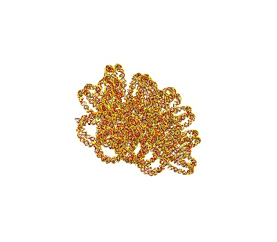
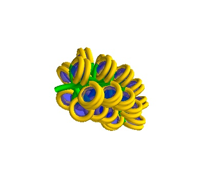

Single DNA Solenoids¶
This example shows how to generate single DNA Solenoids, and either plot them in MayaVI or export them to text
It is recommended that you run this example inside a Jupyter environment rather than a VSCode or similar environment
This requires the mayavi jupyter extension jupyter nbextension install --py mayavi --user# Generating Geometries for Geant4
This notebook contains code blocks used to generate sample geometries used in Geant4 simulations.
[ ]:
import sys
from pathlib import Path
try:
from fractaldna.dna_models import dnachain as dna
except (ImportError, ModuleNotFoundError):
sys.path.append(str(Path.cwd().parent.parent.parent))
from fractaldna.dna_models import dnachain as dna
import matplotlib.pyplot as plt
from mayavi import mlab
# Disable this option for interactive rendering
mlab.options.offscreen = True
# Enable this option for an interactive notebook
# mlab.init_notebook()
Making a straight Solenoidal DNA strand¶
[ ]:
# Make a straight solenoid in a 750 Å box
chain = dna.Solenoid(voxelheight=750)
# MayaVI plots are best for visualisation here
plot = chain.to_strand_plot()
# Save the figure
plot.scene.save_jpg("single_solenoid_strand_plot.jpg")
# In an interactive notebook, you can refer to the figure to
# interact with it.
# plot
[ ]:
plot = chain.to_line_plot()
plot.scene.save_jpg("single_solenoid_line_plot.jpg")

Making a turned Solenoidal DNA Strand¶
[ ]:
# Make a turned solenoid in a 750 Å box
chain = dna.TurnedSolenoid(voxelheight=750)
# MayaVI plots are best for visualisation here
plot = chain.to_strand_plot()
plot.scene.save_jpg("single_solenoid_strand_plot_turned.jpg")

[ ]:
# The line plot method is well adapted to plotting chromatin
plot = chain.to_line_plot()
plot.scene.save_jpg("single_solenoid_line_plot_turned.jpg")

Centering the DNA¶
By default, solenoids are generated starting near (0, 0, 0). If you are running a simulation in Geant4, you will want to use the chain.translate method to move the whole unit down.
[ ]:
print("Default bounds")
print(chain.to_frame()[["pos_x", "pos_y", "pos_z"]].min())
print("After Translation")
chain.translate([0, 0, -750.0 / 2])
print(chain.to_frame()[["pos_x", "pos_y", "pos_z"]].min())
Exporting Solenoidal DNA to CSV¶
[ ]:
# This too can be exported to a dataframe of basepairs
chain.to_frame()
[ ]:
# And a second data frame of histones
# This can be joined to the base pairs frame, assuming a sufficient handling of
# the missing strand index, and the relation between the base pair and histone index.
chain.histones_to_frame()